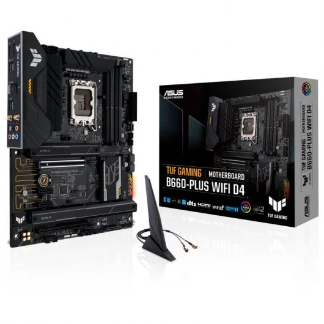
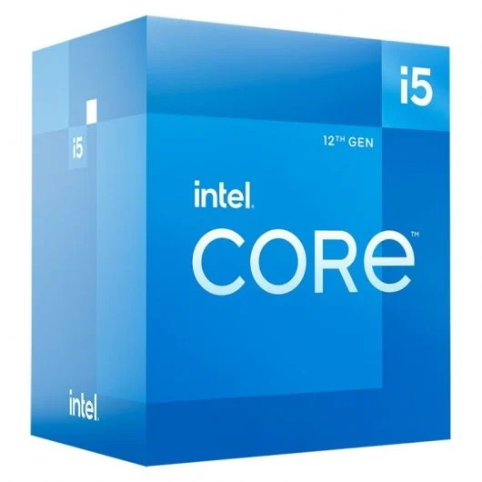
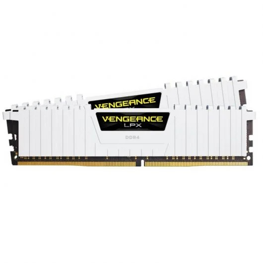
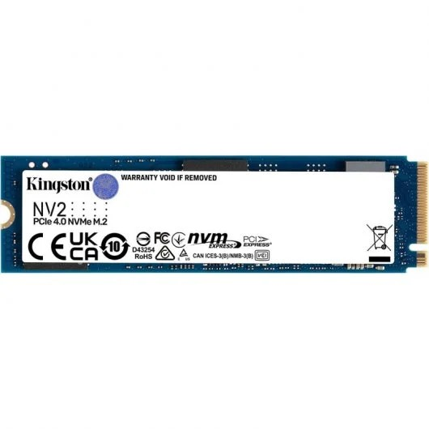
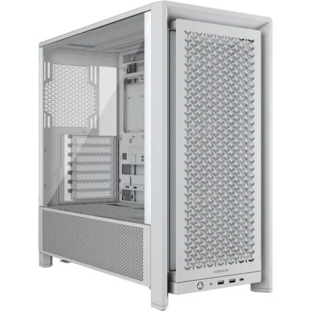
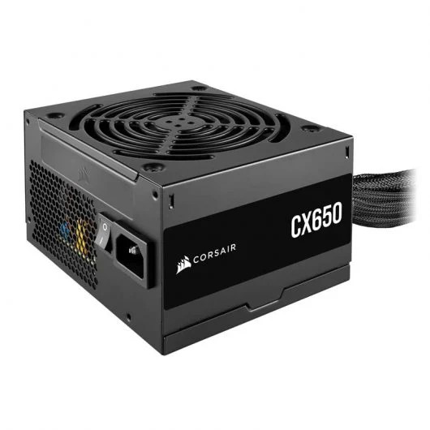
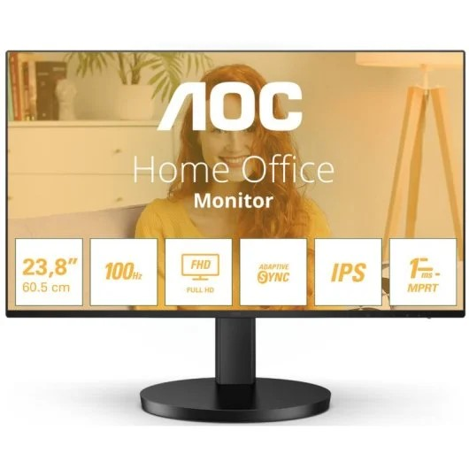

Placa base
La placa base es uno de los principales componentes de un ordenador. A ella se conectan todo el resto de componentes, dispositivos y periféricos, por lo que hay que escogerla con mucho cuidado, ya que el resto de componentes deberán ser compatibles con la placa. Las características de la placa escogida son las siguientes:

Características
- Marca y socket de procesador compatible: Intel LGA 1700
- Memoria compatible: 4x DDR4 (máximo 128 GB)
- Almacenamiento: M.2 y SATA III
- Formato: ATX
- Dispone de módulo Wi-Fi
Precio
195,10€ en PCComponentes
Procesador
El procesador es el cerebro del ordenador: se encarga de ejecutar las instrucciones de los programas y de coordinar el resto de componentes. Debe ser compatible con el socket de la placa base escogida. Las características del procesador escogido son las siguientes:

Características
- Marca: Intel
- Socket: LGA 1700
- Gráficos integrados: Sí (Intel UHD Graphics 730)
- Núcleos: 6 (12 hilos)
- Frecuencia base: 2,5 GHz
Precio
197,30€ en PCComponentes
Memoria RAM
La memoria RAM guarda temporalmente los datos y programas que el ordenador está utilizando en cada momento. El tipo de memoria debe ser el que admita la placa base. Las características de la memoria escogida son las siguientes:

Características
- Tipo: DDR4
- Formato: DIMM
- Capacidad: 16 GB (2 módulos de 8 GB)
Precio
103,99€ en PCComponentes
Almacenamiento
El disco es el componente donde se guardan de forma permanente el sistema operativo, los programas y todos los archivos del usuario. Debe tener un conector compatible con la placa base. Las características del disco escogido son las siguientes:

Características
- Capacidad: 1 TB
- Tipo de disco: SSD
- Conector: M.2 (NVMe PCIe 4.0)
Precio
70,99€ en PCComponentes
Torre
La torre o caja es la estructura que protege y organiza todos los componentes del ordenador. Su tamaño debe permitir instalar la placa base escogida. Las características de la torre escogida son las siguientes:

Características
- Formato: Semitorre ATX
Precio
106,99€ en PCComponentes
Fuente de alimentación
La fuente de alimentación transforma la corriente de la red eléctrica y reparte la energía necesaria a todos los componentes del ordenador. Su potencia debe ser suficiente para el conjunto del equipo. Las características de la fuente escogida son las siguientes:

Características
- Potencia: 650 W
- Formato: ATX
- Eficiencia: 80 Plus Bronze
Precio
56,99€ en PCComponentes
Monitor
El monitor es el periférico que nos muestra la imagen que genera el ordenador. Debe disponer de una conexión que también tenga la placa base. Las características del monitor escogido son las siguientes:

Características
- Resolución: 1920 x 1080 (Full HD)
- Pulgadas: 23,8"
- Tipo de conexión con la placa: HDMI
Precio
77,43€ (reacondicionado) en PCComponentes